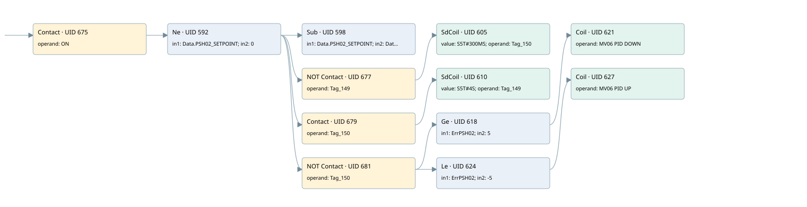

mv06 controlled by psh02
valve control loop · 검색 색인 순서 8 · 원본 내부 NID 추정 7
백업 PLF 원본의 2921692 바이트 위치에서 복원한 XML. 검색 문서 1709의 객체 키 161022007c12000000000000와 연결했다. 이름 해석 19/19개. 남은 RefId는 상수 또는 미해석 참조다.
연결 구조 다시 그리기
원본 Part/PCon/Wire를 이용한 연결도다. TIA 화면의 래더 배치 또는 실행 결과를 재현한 그림은 아니다. 핀 연결은 아래 표와 원본 XML을 기준으로 읽는다. 노드 위에 마우스를 두면 피연산자 이름을 볼 수 있다.

접점·코일·블록과 피연산자
| Part UID | Gate | Negated 핀 | 연결 피연산자 |
|---|---|---|---|
| 675 | Contact | operand = ON | |
| 592 | Ne | in1 = Data.PSH02_SETPOINT; in2 = 0 | |
| 598 | Sub | in1 = Data.PSH02_SETPOINT; in2 = Data.PSH_02; out = ErrPSH02 | |
| 677 | Contact | operand | operand = Tag_149 |
| 605 | SdCoil | value = S5T#300MS; operand = Tag_150 | |
| 679 | Contact | operand = Tag_150 | |
| 610 | SdCoil | value = S5T#4S; operand = Tag_149 | |
| 681 | Contact | operand | operand = Tag_150 |
| 618 | Ge | in1 = ErrPSH02; in2 = 5 | |
| 621 | Coil | operand = MV06 PID DOWN | |
| 624 | Le | in1 = ErrPSH02; in2 = -5 | |
| 627 | Coil | operand = MV06 PID UP |
접점 경로를 펼친 조건식
Contact·O/A·비교기의 원본 연결을 읽기 쉽게 펼친 보조 해석이다. POWER는 전원 레일 시작을 뜻한다. 호출 블록·에지·타이머의 내부 동작과 다중 쓰기 순서는 이 표로 실행 검증하지 않았다. 미해석 핀과 RefId는 원문 연결표에서 확인한다.
| UID | 동작 | 대상 | 원본 접점 경로 | 내용 |
|---|---|---|---|---|
| 605 | SdCoil | Tag_150 | ((ON AND [Data.PSH02_SETPOINT != 0]) AND NOT [Tag_149]) | 시간 동작 SdCoil; 타이머 의미 추가 확인 / 시간 인자 S5T#300MS |
| 610 | SdCoil | Tag_149 | ((ON AND [Data.PSH02_SETPOINT != 0]) AND Tag_150) | 시간 동작 SdCoil; 타이머 의미 추가 확인 / 시간 인자 S5T#4S |
| 621 | Coil | MV06 PID DOWN | (((ON AND [Data.PSH02_SETPOINT != 0]) AND NOT [Tag_150]) AND [ErrPSH02 >= 5]) | 조건에 따른 Coil 기록 |
| 627 | Coil | MV06 PID UP | (((ON AND [Data.PSH02_SETPOINT != 0]) AND NOT [Tag_150]) AND [ErrPSH02 <= -5]) | 조건에 따른 Coil 기록 |
원본 배선 연결
| Wire UID | 동일 Wire 연결 끝점 |
|---|---|
| 683 | Powerrail {} ↔ Part 675.in |
| 647 | ORef 628 (ON) ↔ Part 675.operand |
| 676 | Part 675.out ↔ Part 592.pre |
| 648 | ORef 629 (Data.PSH02_SETPOINT) ↔ Part 592.in1 |
| 649 | ORef 630 (0) ↔ Part 592.in2 |
| 650 | Part 592.out ↔ Part 598.en ↔ Part 677.in ↔ Part 679.in ↔ Part 681.in |
| 651 | ORef 631 (Data.PSH02_SETPOINT) ↔ Part 598.in1 |
| 652 | ORef 632 (Data.PSH_02) ↔ Part 598.in2 |
| 653 | Part 598.out ↔ ORef 633 (ErrPSH02) |
| 655 | ORef 635 (Tag_149) ↔ Part 677.operand |
| 678 | Part 677.out ↔ Part 605.in |
| 654 | ORef 634 (S5T#300MS) ↔ Part 605.value |
| 657 | ORef 636 (Tag_150) ↔ Part 605.operand |
| 659 | ORef 638 (Tag_150) ↔ Part 679.operand |
| 680 | Part 679.out ↔ Part 610.in |
| 658 | ORef 637 (S5T#4S) ↔ Part 610.value |
| 661 | ORef 639 (Tag_149) ↔ Part 610.operand |
| 662 | ORef 640 (Tag_150) ↔ Part 681.operand |
| 682 | Part 681.out ↔ Part 618.pre ↔ Part 624.pre |
| 663 | ORef 641 (ErrPSH02) ↔ Part 618.in1 |
| 664 | ORef 642 (5) ↔ Part 618.in2 |
| 665 | Part 618.out ↔ Part 621.in |
| 667 | ORef 643 (MV06 PID DOWN) ↔ Part 621.operand |
| 668 | ORef 644 (ErrPSH02) ↔ Part 624.in1 |
| 669 | ORef 645 (-5) ↔ Part 624.in2 |
| 670 | Part 624.out ↔ Part 627.in |
| 672 | ORef 646 (MV06 PID UP) ↔ Part 627.operand |
식별자 해석 근거 19개
| ORef UID | RefId | 이름 | IdentXmlPart 파일 | 해석 방법 |
|---|---|---|---|---|
| 628 | 1 | ON | 0617-IdentXmlPart.xml | UID/RID + search-text + NID agreement |
| 629 | 71 | Data.PSH02_SETPOINT | 0619-IdentXmlPart.xml | UID/RID + search-text + NID agreement |
| 630 | 38 | 0 | 0620-IdentXmlPart.xml | literal candidate: UID/RID/NID + nearby named declarations + search-text agreement |
| 631 | 71 | Data.PSH02_SETPOINT | 0619-IdentXmlPart.xml | UID/RID + search-text + NID agreement |
| 632 | 73 | Data.PSH_02 | 0619-IdentXmlPart.xml | UID/RID + search-text + NID agreement |
| 633 | 74 | ErrPSH02 | 0062-IdentXmlPart.xml | UID/RID + search-text + NID agreement |
| 635 | 75 | Tag_149 | 0617-IdentXmlPart.xml | UID/RID + search-text + NID agreement |
| 636 | 77 | Tag_150 | 0617-IdentXmlPart.xml | UID/RID + search-text + NID agreement |
| 634 | 76 | S5T#300MS | 0620-IdentXmlPart.xml | literal candidate: UID/RID/NID + nearby named declarations + search-text agreement |
| 638 | 77 | Tag_150 | 0617-IdentXmlPart.xml | UID/RID + search-text + NID agreement |
| 639 | 75 | Tag_149 | 0617-IdentXmlPart.xml | UID/RID + search-text + NID agreement |
| 637 | 33 | S5T#4S | 0620-IdentXmlPart.xml | literal candidate: UID/RID/NID + nearby named declarations + search-text agreement |
| 640 | 77 | Tag_150 | 0617-IdentXmlPart.xml | UID/RID + search-text + NID agreement |
| 641 | 74 | ErrPSH02 | 0062-IdentXmlPart.xml | UID/RID + search-text + NID agreement |
| 642 | 185 | 5 | 0620-IdentXmlPart.xml | literal candidate: UID/RID/NID + nearby named declarations + search-text agreement |
| 643 | 78 | MV06 PID DOWN | 0617-IdentXmlPart.xml | UID/RID + search-text + NID agreement |
| 644 | 74 | ErrPSH02 | 0062-IdentXmlPart.xml | UID/RID + search-text + NID agreement |
| 645 | 186 | -5 | 0620-IdentXmlPart.xml | literal candidate: UID/RID/NID + nearby named declarations + search-text agreement |
| 646 | 80 | MV06 PID UP | 0617-IdentXmlPart.xml | UID/RID + search-text + NID agreement |
검색 코드 보조 자료
참조 명칭을 찾기 위한 자료이며 실행 순서나 AND/OR 관계는 위 연결표로 확인한다.
"on" "data".psh02_setpoint 0 sub "data".psh02_setpoint "data".psh_02 "tag_149" "tag_150" s5t#300ms "tag_150" "tag_149" s5t#4s "tag_150" #errpsh02 5 "mv06 pid down" #errpsh02 -5 "mv06 pid up" #errpsh02